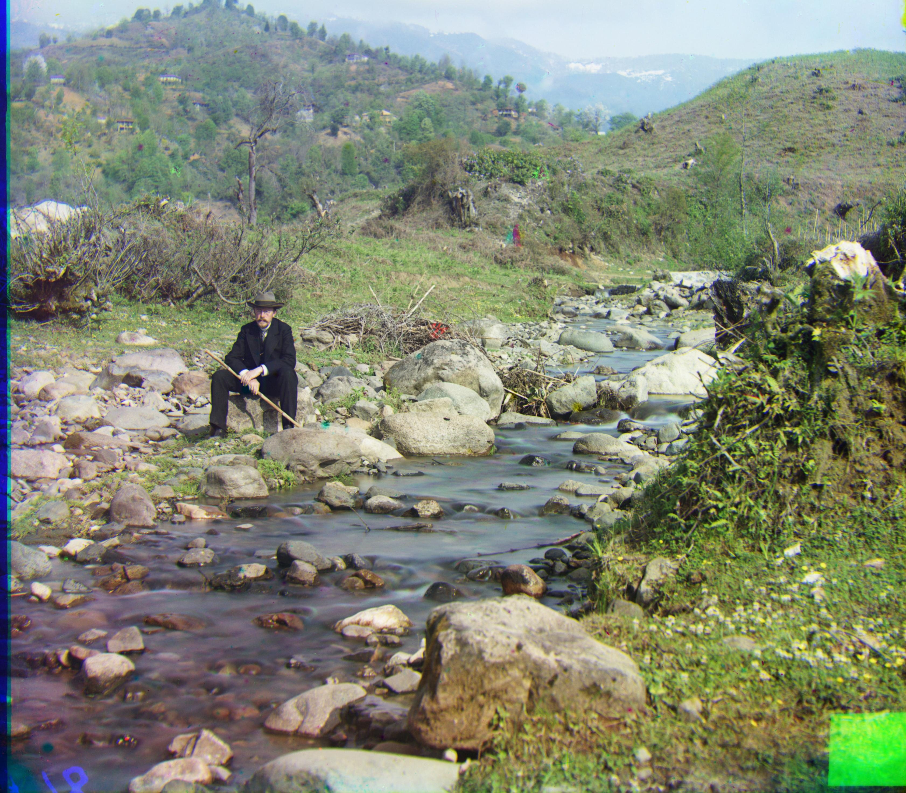

General Approach
 Green: [-9, 2], Red: [-16, 3] |
Green: [-103, 3], Red: [-198, -4] |
Green: [-80, 24], Red: [-152, 41] |
 Green: [-17, 2], Red: [-25, 2] |
|
Green: [-74, 11], Red: [-140, 11] |
Green: [-91, 16], Red: [-172, 23] |
 Green: [-71, 9], Red: [-136, 13] |
Green: [-50, 10], Red: [-84, 14] |
|
Green: [-77, 19], Red: [-149, 34] |
Green: [-97, -10], Red: [-120, -27] |
 Green: [-11, 2] Red: [-22, 3] |
 Green: [-72, 12], Red: [-144, 7] |
|
 Green: [-92, -2], Red: [-175, 28] |
 Green: [-89, 4], Red: [-125, 4] |
 Green: [-89, 4], Red: [-125, 4] |
 Green: [-85, -13], Red: [-159, -11] |